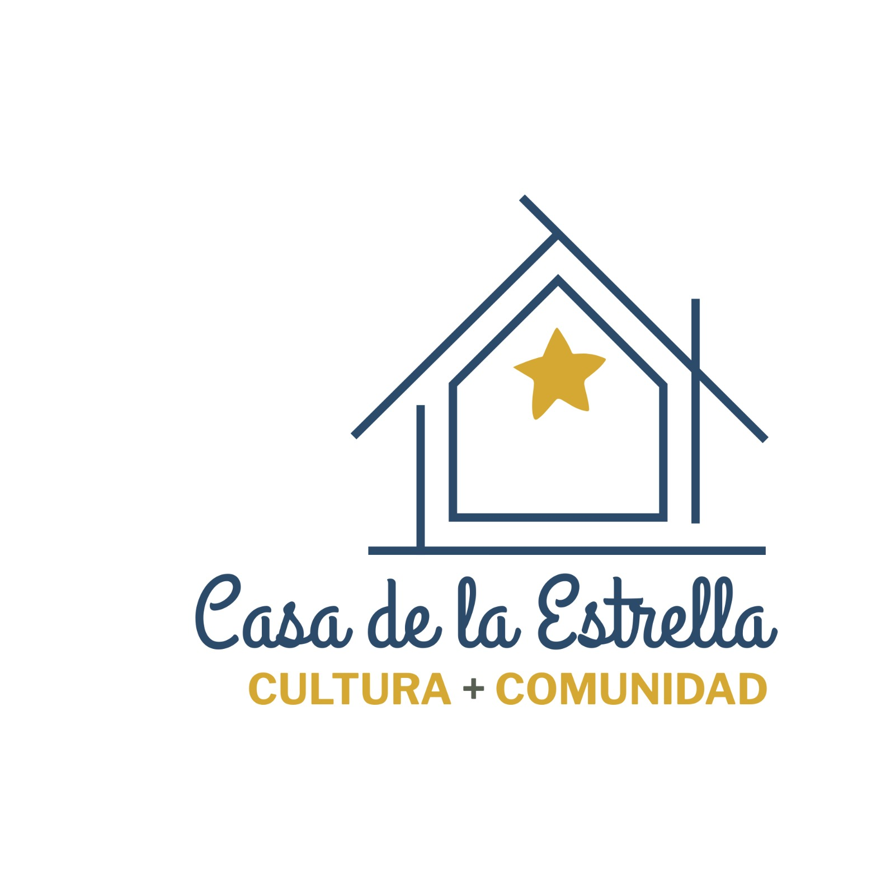

Próximamente
Casa de la Estrella
Cultura · Comunidad
Estamos abriendo las puertas de un nuevo hogar para la cultura y la comunidad. Pronto este será un espacio para encontrarnos, crear y compartir.
comunidad@casadelaestrella.org
Próximamente
Cultura · Comunidad
Estamos abriendo las puertas de un nuevo hogar para la cultura y la comunidad. Pronto este será un espacio para encontrarnos, crear y compartir.
comunidad@casadelaestrella.org